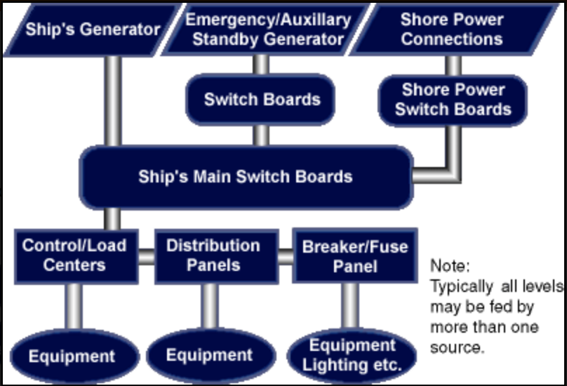
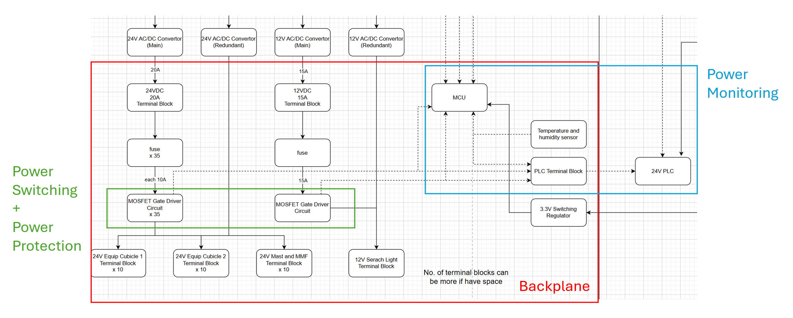
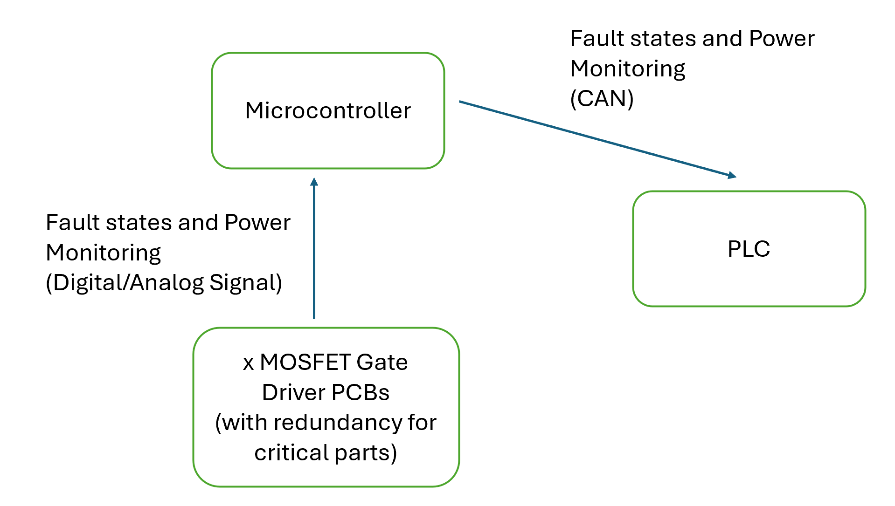
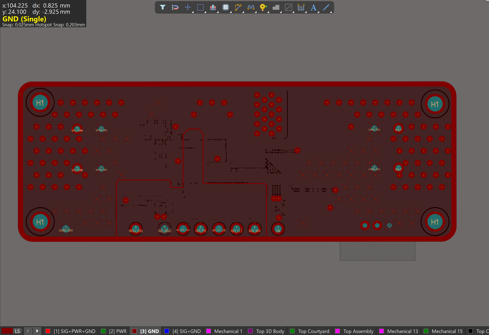
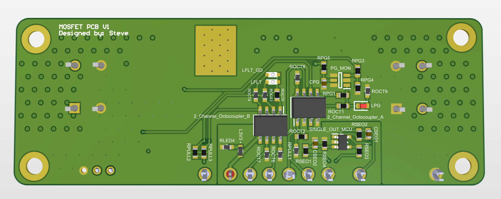
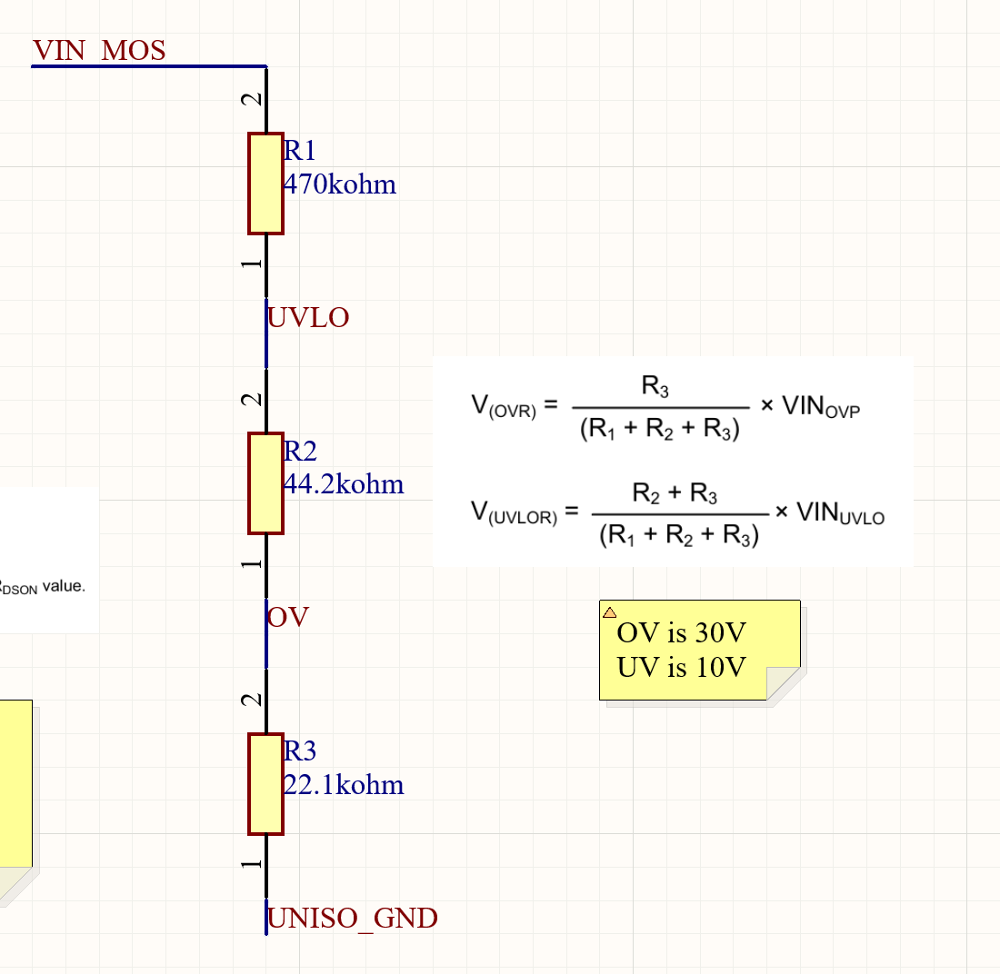
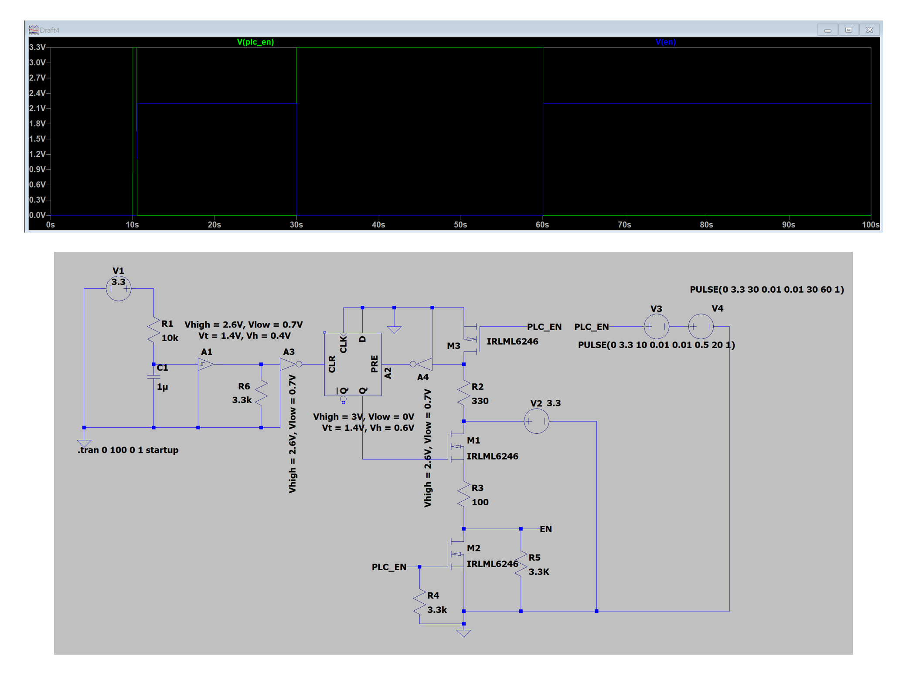

Acknowledgements
Firstly, I would like to thank ST Engineering for giving me the opportunity to work on this project. This project would not have been possible without the support of many dedicated ST Engineering members. I am especially grateful to Ang Ming Xiang and Teo Xuen, my ST Engineering supervisors and Nathanel Tan, the Head of ST engineering Unmaned & Integrated System Department for providing the guidance and technical input for this project.
I also wish to acknowledge the support provided by the NUS College of Engineering, particularly Mr Royston, and Mr Graham from the Engineering Design and Innovation Centre. I would also like to thank Mr Eugene Ee for taking the time to review my project and provide valuable advices.
List of Common Acronyms
| Acronym | Definition |
|---|---|
| USV | Unmanned Surface Vessel |
| PDS | Power Distribution System |
| PCB | Printed Circuit Board |
| PLC | Programmable Logic Controller |
| SSR | Solid State Relay |
| MCU | Microcontroller |
| DC | Direct Current |
| MTBF | Mean Time Before Failure |
| MTTR | Mean Time To Repair |
| MOSFET | Metal-Oxide-Semiconductor Field-Effect Transistor |
| TI | Texas Instruments |
| PG | Power Good |
| IC | Integrated Circuit |
| GPIO | General Purpose Input/Output |
| ADC | Analog to Digital Converter |
| I2C | Inter-Integrated Circuit |
| CAN | Controller Area Network |
1. Abstract
This project focuses on developing a compact Power Distribution System (PDS) for ST Engineering’s Unmanned Surface Vehicle. The PDS is a critical component of the vehicle’s electrical system, designed to distribute and control the power to different parts of the vehicle.
The new PDS developed mainly consists of serveral compact and robust printed circuit board (PCB) solutions as well as the firmware associated with them. The solutions includes key features such as power line switching, protection and accurate power status monitoring and reporting, to ensure its functionality even after a power line fault has occured.
Table of Contents
- Background
- Literature Review
- Design Statement
- Value Proposition
- Design Requirements
- System Overview
- Power Switching
- Power Protection
- Power Monitoring
- MCU PCB
- Power Backplane
- Individual System Prototyping and Testing
- Overall Integration and Testing
- Conclusion
2. Background
2.1 Introduction
*For a detailed introduction to the background of this project, please refer to the interim report. Below is a brief summary of the key points.
-
Unmanned Surface Vehicles (USVs) are boats or ships that operate on the water surface without an onboard crew.
-
Medium-sized USVs—typically 2 to 24 meters in length—are the target vehicle of this project.
-
In current USV market, more than half of all vessels are small or medium-size categories.
-
These USV’s Power Distribution System (PDS) — the central focus of this project.
2.2 Existing Solutions
Most USVs today still adopt PDS designs similar to those used in conventional manned vessels, which were not specifically designed for autonomous operations.
Common components found in such PDS setups include transformers, DC converters, Programmable Logic Controllers (PLCs), Relays Module, Fuses, and Circuit Breakers. These components are interconnected using cables, terminal blocks, and wiring harnesses to form the overall electrical network.

Figure 3: Conventional Marine Direct Current (DC) PDS Architecture
3. Literature Review
To better understand the challenges that may arise when conventional PDS designes are applied to medium-sized USVs, analysis on two representative case studies will be discussed in this report. The first is a literature review of Onboard DC Grid™, a marine power system developed by ABB, one of the leading power system providers in the maritime industry. The second is a real-world examination of the PDS currently used in ST Engineering’s medium-sized USVs.
Please refer to the interim report for the detailed literature review of the above mentioned cases
Below is a brief summary of the existing problems identified in the literature review:
-
The impact on the autonomous mission success: higher system MTBF lead to more frequent power faults, which can significantly disrupt the USV’s operations and reduce its mission success rates.
-
Size Constraint: Limits the available space for other essential components and makes maintenance tasks more cumbersome.
-
Existance of Single Pont of Failure: The loss of PLC signal immediately de-energises all relays, presenting a significant operational risk to the USV.
-
Lack of power line monitoring and reporting: Early signs of degradation or minor malfunctions can easily be missed and gradually escalate, eventually developing into critical failures.
4. Design Statement
Targeting the above identified problems, the design statement of this project are summarised as:
5. Value Proposition
For detailed discussion on the value proposition of this project, please refer to the interim report. Below is a brief summary of the key points.
The new PDS offers several key benefits to its stakeholders::
| Benefits | Rationale |
|---|---|
| Compact Design | A smaller PDS footprint allows more efficient use of space within the USV’s equipment racks. This increases design flexibility and scalability across different USV sizes and configurations. |
| Enhanced Fault Tolerance | A more robust PDS reduces the impact of component failures, improving overall system reliability and increasing mission success rates. |
| Advanced Power Monitoring and Reporting | Real-time power-status insights support early detection of abnormal conditions. This enables proactive maintenance, prevents minor issues from escalating into critical faults, and reduces repair costs and downtime. |
Table 3: Key Benefits of the New PDS to Stakeholders
6. Design Requirements
6.1 Design Standards
To ensure the new PDS meets industry best practices and regulatory requirements, the following design standards were referenced in the design process:
IEEE Recommended Practice for the Design and Application of Power Electronics in Electrical Power Systems (IEEE Std 1709-2010) [4].
This standard provides comprehensive guidelines for designing power electronic systems in maritime applications, covering aspects such as electrical safety, electromagnetic compatibility, thermal management, and environmental considerations.
6.2 Technical Specifications
As a starting point, the new PDS must at least match the technical performance of the existing system. Based on an evaluation of the current PDS capabilities as well as suggestions given by the ST USV engineering team, the following technical requirements were identified:
| Technical Capabilities | Specifications |
|---|---|
| Physical Dimension | < 445mm x 600mm x 133mm |
| Number of Channels | 26 |
| Application Voltage | 12V and 24V DC |
| Maximum Continuous Current per channel | 20A |
| Maximum Transient Current per channel | 30A |
| Fault Protection | Overvoltage/Undervoltage/Overcurrent |
| Power System Monitoring | Power Consumption, Power Good(PG), Fault Status |
| Communication Protocol | Digital/Analog/CAN 2.0 |
Table 4: Core Technical Requirements for the New PDS
The rationale for the these technical specifications will be presented in their respective sections below.
6.3 Functional Sub-goals
In addition to meeting the technical specifications, the new PDS must achieve three key functionalities to satisfy user requirements. Each of these is described in detail in the corresponding section below.
| Key Functionalities | Section Number |
|---|---|
| Compact and robust power-switching solutions for each channel | Section 6 |
| Integrated power-line protection for transient and fault conditions | Section 7 |
| Real-time monitoring and reporting of power status and current consumption for each channel | Section 8 |
Table 5: PDS System Functionalities and the Corresponding Report Sections
6.4 Environmental constraints
Since this product is intended for use in maritime environments, the following environmental parameters were identified from the design standard mentioned above and will be used as a reference in the design and testing of the new PDS.
| Parameters | Constraint |
|---|---|
| Ambient Temperature | ≤ 50°C |
| Vibration | ≥ 22 Hz |
| Humidity | Approximately 80% |
Table 6: Environmental condition for the PDS operation
6.5 Performance Criteria
The following performance criteria are defined to evaluate the new PDS against the technical specifications and functional sub-goals outlined above. These criteria will be directly assessed during the prototyping and testing phases of the project.
| Type | Performance Criterion | Target Value | Measurement Method |
|---|---|---|---|
| Power Distribution Stability | |||
| Power Switching Capability | Ability to response to power channel control signal (ON/OFF) from the vehicle’s control system | Correct switching behaviour; Response time < 1ms | Conduct repeated switching tests under various load conditions and record the results |
| Power Monitoring Accuracy | Details in Section 10.3 | ||
| Power Protection Effectiveness | Ability to effectively protect the power lines from transient fault conditions; Ability to identify the type of fault (e.g., overcurrent, short circuit) | Correct fault type identification; Protection trigger time < 1ms |
7. System Overview
The proposed new PDS consists of three main subsystems of PCBs: the Relay PCB system, the MCU PCB, and the Power Backplane PCB. Each subsystem is designed to address specific functional requirements while ensuring seamless integration with the overall system architecture.

Figure 6: Summarised System Architecture of the developed PDS
8. Relay PCB System
The Relay PCB system is the core of the proposed PDS. It consists of 26 individual relay PCBs, each controls and monitors a single DC power channel. This section of the report will introduce the design of the this PCB system based on its contribution to the three key functionalities mentioned in Section 6.3
8.1. Power Switching
One important feature of the relay PCB is to provide compact and robust power switching control for each power channel. This is achieved through two main solutions: Moving from Relay and PLC system to Relay PCB backplane system & Modifying the power switching logic.
8.1.1 Moving towards PCBs
As mentioned in Section 3.2, the current PDS adapted in ST Engineering USV consists of a combination of PLC and multiple SSRs to perform power switching. This is also the common approach used in many conventioanl USV in the marintime industry. In this project, a MCU + Relay PCB system was explored as an alternative to this traditional approach.
The below table summarises the key advantages and disadvntages between the two approaches:
| Aspect | PLC + Relay Modules | MCU + Relay PCB |
|---|---|---|
| Size and Weight | - Bulky and heavy due to discrete components - Requires additional space for wiring and terminal blocks |
- Compact and lightweight with integrated circuit design - Reduces wiring complexity and space requirements |
| Reliability and Durability | - Certified for maritime usage - proper insulation and protection done based on industrial standards |
- Large efforts are required to design for robustness |
| Customisability and Scalability | - Limited customisation - Easily scalable by adding or modifying Relay/PLC modules |
- Highly customisable to specific requirements - More difficult to change/scale up |
Table 7: Comparison Between PLC + Relay and MCU + Relay PCB System
While the MCU + Relay PCB system offers significant advantages in achieving size reduction, it also presents the above mentioned limitations that need to be addressed. As a result, several design improvements were made in this project to target these constraints:
Customisability and Scalability:
To address this challenge, a PCB backplane architecture was adopted for the system, in which the MCU and Relay PCBs are implemented as modular plug-in cards while the base backplane contains only the connectors and copper traces for power transmission purposes. This modular approach enables easy replacement and upgrading of individual relay PCB cards, allowing users to customise and scale the PDS based on their specific requirements without undertaking a full redesign.
Reliability and Durability:
To enhance system reliability and durability, the PLC will not be removed from the proposed PDS; instead, it will remain as the powerswitching controller, while the MCU handles only the power monitoring and data collection. This hybrid approach leverages the strengths of both PLCs and MCUs, ensuring robust and fail-resistant operation without compromising the compactness of the PCB design.

Figure 7: Control Signal Flow in the new PDS
8.1.2 Improved Power Switching Logic
As mentioned in Section 3.2, the current PDS control of the ST Engineering USV relies on a continuous signal from the PLC, which creates a risk of complete power-line disconnection in the event of a PLC failure or loose connection. In this project, a new control logic using an ON signal latching design is introduced to solved this problem.
The diagrams below illustrate the current control logic flow and the proposed new control logic.

Figure 8: Current Control Logic in the PDS

Figure 9: New Control Logic proposed
The key difference between the two control logics lies in how the power channel’s ON state is maintained. In the current system, the ON state is sustained by a continuous digital HIGH signal from the PLC. In contrast, the new control logic employs a latching mechanism: a momentary HIGH signal from the MCU toggles and latch the power channel ON at startup, and subsequent continuous HIGH signal will keep the channel OFF. This design ensures that a signal loss from PLC will only turn existing OFF power channel to ON instead of ON power channel to OFF. This significantly enhances fault tolerance, as transient or permanant PLC/MCU failures will not disrupt power delivery to critical subsystems during missions.
In the interim report, it is mentioned that a separate PCB will be designed to implement this latching mechanism while remaining pluggable from the Relay PCB. However, after further review and consultation with the ST Engineering USV team, the latching circuit will be integrated into the Relay PCB, which is a more compact and cost-effective approach. The schematic and layout of the latching circuit is shown below.

Figure 10: Latch section Schematic and Layout
An LTspice simulation has also been conducted with the designed circuit to validate its functionality. The simulation results are included in the appendix section of this report.
8.2 Power Protection
Power protection features are crucial in ensuring the safety and reliability of PDS. Current PDS in ST Engineering USV lacks adequate protection features, making it vulnerable to transient and fault situations.The Relay PCB design explained below will target this issue.
8.2.1 Protection Requirements
The types of faults that the new PDS should be able to protect against are identified from the design standards outlined in Section 6.1. These include Overvoltage (OV), Undervoltage (UV) and Overcurrent (OC) faults.
8.2.2 Choice of MOSFET Gate Driver IC - TPS4800
MOSFET gate driver is an electronic device designed to efficiently control the gate terminal of a MOSFET, enabling rapid switching between its ON and OFF states. It is the main compnent that enables the power channel switching functionality in the Relay PCB.
In this project, the MOSFET gate driver IC TPS4800 from Texas Instruments (TI) is selected for its ability to achieve all the above required fault protection while satisfying the technical specifications mentioned in Section 6.2. The key features of the TPS4800 are summarised in the appendix section.
Besides, during the design of the circuit associated with the MOSFET gate driver, multiple considerations were taken to meet the technical and protection specifications. These considerations are mentioned in the appendix section as well.
8.2.3 User-configurable Protection Thresholds
To further enhance the capabilities and modularity of the Relay PCB, the protection thresholds for OC condition is made user-configurable in the design
This threshold can be configured through a DIP switch interface on the PCB, providng a simple and intuitive way for users to adjust the setting without needing to modify the hardware and refabricate. The avaliable threshold options are 5A, 10A, 20A and 30A, which are the 4 most common current ratings of the devices connected to the system. During PCB operation, the state of this DIP switch will be read by the MCU to identify the OC threshold setting on each channel. This information will then be used to identify the type of fault triggered in that power channel (explained further in section 8.4).
8.3 Power Monitoring
The power monitoring section of the Relay PCB is responsible for monitoring and reporting power status and consumptions statistics in each channel. This section will detail the various features implemented to achieve this functionality.
8.3.1 Power Good Status
The Power Good (PG) status is a critical indicator of the health of power supply. It provides the most direct feedback on the power condition of each channel, allowing the system to quickly identify the occurance of any power loss issues.
To achieve this functionality, a TPS3711DDCR voltage supervisor from TI is installed on the PCB. The IC monitors the output voltage and asserts the PG signal high when the voltage is within a specified range. In this project, the range is set to 10 - 30V which is the acceptable operating voltage range of the PDS.
8.3.2 Fault Reporting
As mentioned in Section 8.2.1, the MOSFET gate driver IC TPS4800 is selected for its built-in protection features. Besides, when these protection features are triggered, the IC will assert a fault signal low, which can then be used to report the fault status of each channel.
However, this fault signal is a simple digital signal that only indicates whether a fault has occurred, without providing specific information about the type of fault. TI’s INA228 current shunt monitor is hence used to address this limitation, which will be explained with more detail in the following sections.
8.3.3 Power Consumption Statistics
Accurate power consumption monitoring is essential for identifying abnormal power situations in each channel. Here are some measurement requirements for the power consumption monitoring system in the new PDS:
| Parameter | Requirement |
|---|---|
| Current/Voltage Measurement Accuracy | ±1% of the actual value or better |
| Voltage Measurement Resolution | 100mV or better |
| Voltage Measurement Range | 0V to 30V (to cover both 12V and 24V systems) |
| Current Measurement Resolution | 0.01A or better |
| Current Measurement Range | 0A to 30A (to cover the maximum transient current) |
Table 8: Power Consumption Monitoring Requirements
As mentioned above, the INA228 current monitoring IC from TI is the choice for this relay PCB design. It provides high-precision power statistics measurements with an integrated 20-bit ADC that satisfy the above resolution and accuracy requirements. At the same time, it supports I2C communication which can be used for real-time data reporting to the MCU
What is more, the IC also features programmable alert thresholds for abnormal power conditions, which can coordinate with the fault signals coming from TPS4800 to provide more detailed insights into the nature of any faults that occur.
8.3.4 Fault Analysis Logic
To make use of the above mentioned alert signals, a fault analysis logic, illustrated in the figure below, is implemented in the new PDS. With this logic, the system can distinguish between the types of faults occurred and report this information to the USV’s power PLC for further investigations

Figure 12: Fault Analysis Logic Flow
8.3.5 Overcurrent Protection Thresholds Sensing
9. MCU PCB System
The MCU PCB serves as an important processing unit in the new PDS, responsible for collecting power monitoring data and facilitating communication with the USV’s power PLC. The schematic and layout of the MCU PCB is shown below.

Figure 14: MCU PCB Schematic and Layout
9.1 Choice of MCU - STM32G474QET6
The MCU selected for this PCB is from the STMicroelectronics STM32G4 series, in particular the STM32G474QET6, which offers a powerful ARM Cortex-M4 core, ample memory resources, and most importantly, a wide range of peripherals sufficient for the new PDS requirements.
The MCU contains up to 107 fast GPIOs, 5 ADC Channels, and 5 I2C buses, making it enough for collecting data from the 26 relay PCB channels, which outputs in total 78 digital signals, 26 analog signals, and 26 I2C signals. The MCU also features a built-in CAN controller, which reduce the overall PCB footprint by avoiding the need for a separate CAN controller implementation.
9.2 Data Reporting Peripheral Design
As mentioned above, from the MCU PCB, communication with the USV’s power PLC is carried out via the Controller Area Network (CAN) bus. This communication protocol is chosen here because of its robustness, reliability, and suitability for high-speed data transmission in noisy environments, making it ideal for the maritime environment of this project. This approach also reduces overall wiring complexity, as only two wires are required for CAN communication.
Below is an overall data flow diagram showing how the power monitoring data is collected and reported in the new PDS.

Figure 13: Power Data Flow in the new PDS
10. Power Backplane
As mentioned in Section 9.1, the power backplane is designed to provide a robust and scalable platform for integrating the Relay PCBs, the MCU PCB and other components in the new PDS (e.g. fuses, power convertors). The backplane includes high-current connectors for power delivery, as well as signal connectors for CAN communication between the MCU PCB and the USV’s power PLC. Below is the schematic and layout of the power backplane.

Figure 15: Power Backplane Schematic and Layout
10.1 Vibration Simulation for Board to Board Connectors Selection
To ensure the mechanical integrity of the board-to-board connectors used for connecting the Relay PCBs to the power backplane, a vibration simulation using SolidWorks was conducted to evaluate the mechanical stress exerted on the connector chosen, which is the TE Connectivity MULTI-BEAM Connector 6450120-2 (referred to the interim report for the selection process) The vibration profile used in this simulation is obtained from the on-board IMU data of ST Engineering’s USV during a sea trail happened on March 10th 2026.

Figure 15: Vibration Simulation Results
The simulation results showed that the connector can withstand the expected vibration levels without experiencing significant mechanical stress or failure, making it a suitable choice for the PCB connectors.
More considerations regarding the design of the power backplane such as current carrying capacity, thermal management and mechanical robustness will be provided in the appendix of this report.
11. Firmware Development
11.1 Relay PCB Firmware
For developing the firmware for the Relay PCB, the main focus is on implementing the fault protection and reporting features. The firmware is designed to interface the MCU and the current shunt monitor INA228AIDGSR to achieve these functionalities.
Key considerations of the design involves:
- Configuring the conversion time of INA228 to response to transient faults
- Setting the sensor sampling rate to ensure accuracy in continuous power monitoring
- Allocating the I2C static address for multiple channels.
11.2 MCU Firmware
The firmware for the MCU PCB is responsible for collecting data from the Relay PCB and communicating with the USV’s power PLC via CAN bus. Detail tasks of the MCU firmware include:
- Reading the PG status, fault status, and power consumption data from the Relay PCB.
- Processing the collected data to determine the fault types if any faults are detected.
- Sending the processed data to the USV’s power PLC via CAN communication.
12. Subsystem Prototyping and Testing
Before integrating the MOSFET PCB, MCU PCB, and power backplane into a complete PDS, each subsystem will be prototyped and tested separately to validate their functionality and performance against the technical specifications outlined in Section 5.2 and the design requirements in Section 5.3.
12.1 Relay PCB Prototyping and Testing
In this project, the relay PCB has gone through 3 major iterations, which was designed to be tested alone, with T&C PCB and with the power backplane resepctively.This report will go through briefly the first 2 iterations and focus on discussing the test result of the final iteration, which reflects the best performance of this series of PCB prototypes.
12.1.1 1st Iteration Relay PCB Testing
The 1st iteration of the relay PCB is designed with Wago 221-412 terminal blocks as power input and output connectors, which allow it to be tested seperately through cable connections. The testing of this iteration involves basic power channel switching, protection features testing and power monitoring testing. The testing results of this iteration are used to validate the basic functionalities of the relay PCB and identify areas for improvement in the subsequent iterations.
12.1.2 Testing and Commissioning (T&C) PCB Prototyping and Testing
Before carrying out the design of a full power distribution system. a single channel T&C PCB was designed and tested to validate the core functionalities, including power switching, fault protection, and power monitoring when the relay PCB is integrated with the MCU. This prototype will serve as a proof of concept for the overall system design and allow for iterative improvements before scaling up to the full 26-channel implementation. The schematic and layout of the T&C PCB is shown below.

Figure 16: Testing and Commissioning PCB Schematic and Layout
Besides serving as a preliminary testing platform for the relay PCB, the T&C PCB is also used to conduct a commissioning test for the relay PCB produced. This test involves connecting the relay PCB to the T&C PCB and verifying that all functionalities are working as intended. The test will also validate overcurrent threshold and static I2C ID set by the DIP switch, which are important features for the final system. Below is a figure showing the commissioning test procedures and intended outcomes:

Figure 17: Relay PCB Commissioning Test Procedures and Intended Outcomes
12.1.3 2nd Iteration Relay PCB & T&C PCB Integrated Testing
Developing upon the 1st iteration, the 2nd iteration of the relay PCB is designed with the high-current PCB board to board connectors mentioned above. This means that it cannot be tested alone with cable connections. A T&C PCB is thus developed (mentioned with greater detail in Section 12.4) and used for the testing of this iteration. Other than what is conducted in the previous iteration, extra testing is also performed on board start-up procedures, MCU interaction as well as data collection and reporting.
12.1.4 Final Iteration Relay PCB Testing
This iteration of the PCB mainly focus on improving some issues on the previous iteration such as addition of signal regulators for PLC control signals. After the fabrication and assembly of this iteration, a throughout testing and evaluation is conducted on the prototype, which is summaried in the table below:
| Tested Functionality | Test Procedures | Expected Outcome | Actual Outcome | Pass/Fail |
|---|---|---|---|---|
| Power Channel Switching at no load | PASS | |||
| Power Channel Switching at 20A continuous current drawn | PASS | |||
| Power Channel Protection at 30A transient current drawn | PASS | |||
| Power Channel Protection at 9V voltage input | PASS | |||
| Power Channel Protection at 32V voltage input | PASS | |||
| Power Channel Protection at 0.06A continuous current drawn (smallest load in ST Engineering USV) | PASS | |||
| Power Channel Monitoring at 20A continuous current drawn | PASS | |||
| Power Channel Monitoring at 12V Voltage Input | PASS |
Table 16: Final Iteration Testing Results Summary

Figure 18: Test Setup for Final Iteration of the Relay PCB
12.2 MCU PCB Prototyping and Testing
The MCU PCB is prototyped with reference to the MCU section of the T&C PCB. The testing of the MCU PCB focuses on validating its data collection and reporting functionalities, especially under multi-channel operation.
12.3 Power Backplane Prototyping and Testing
The power backplane is prototyped by expanding the single channel Relay PCB Connector section of the T&C PCB to a full 26 channels backplane design. The testing of the power backplane focuses on validating its power transmission capabilities.
13. Overall System Integration and Testing
After the separate testing of the cards and backplane, the next step is to integrate the subsystems and conduct comprehensive testing to validate the overall functionality and performance of the new PDS.
However, due to time constraint, this project will only cover the initial integration phases, which include in lab functionality testing and thermal testing. The final on-boat testing phase will be carried out by the ST Engineering USV team after the completion of this project.
13.1 Functionality Testing
Functionality testing will be conducted to verify that the new PDS meets all technical specifications and functional requirements outlined in Section 5. This will involve testing the power switching capabilities, fault protection features, and power monitoring functionalities under various load conditions and fault scenarios. The testing will be performed in a controlled laboratory environment using power supply and electronic load tester. The tests conducted is similar to the ones performed during the final iteration testing of the relay PCB, but on a full 26 channel power backplane with 10 operating channel.

Figure 18: Test Setup for functionality testing of 10 Operating Channels
13.2 Thermal Testing
Thermal testing is conducted to evaluate the heat dissipation capabilities of the new PDS under various load conditions. This overall system thermal testing will be conducted bymonitoring the temperature of 10 loaded channels. The testing will be performed using thermal imaging cameras and temperature sensors to capture real-time temperature data during the operation of the PDS. Below is a summary of the thermal testing results:
| Load Condition | Component | Hotest Spot Steady State Temperature | Within Accepted Range? | |
|---|---|---|---|---|
| 0A | MOSFETs | |||
| 0A | Shunt Resistor | |||
| 30A | MOSFETs | |||
| 30A | Shunt Resistor |
Table 18: Thermal Testing Results Summary for 10 Loaded Channels

Figure 19: Test Setup for thermal testing of 10 Loaded Channels
14. Conclusion
14.1 Limitations
The first limitation of this project is the lack of testing under actual operational conditions. While the functionality and thermal testing conducted in the laboratory provide valuable insights into the performance of the new PDS, they may not fully capture the complexities and challenges of real-world maritime environments, such as exposure to saltwater, temperature fluctuations, and mechanical vibrations. As a result, the system’s performance and reliability under these conditions remain unverified. This limitation hopefully will be solved by more follow-up testing after the completion of this project.
Another limitation is associated with the technical constraints of the design. The current PDS PCBs are only suitable for DC power operation but not functional under AC load. This is a significant limitation, as many maritime system components (e.g. Servers/Switches, Induction motors) still operate on AC power. This limitation highlights the need for future iterations of the PDS to expand its capabilities to support a wider range of power types and applications.
14.2 Possible Future Improvements
As mentioned in the limitations section, one potential improvement for the new PDS is to expand its capabilities to support AC power loads. This would involve redesigning the power switching components to handle AC currents, implementing appropriate protection features for AC faults, and modifying the monitoring system to accurately measure AC power consumption. This improvement would significantly enhance the versatility and applicability of the PDS in maritime environments, allowing it to support a wider range of systems and components.
Other than more hardware developments, possible improvements can also be made in the software aspect of the PDS. For example, the data collected by the MCU can be further processed using machine learning algorithms to predict potential faults before they occur, enabling proactive maintenance and reducing downtime. Additionally, the user interface for monitoring the PDS could be enhanced to provide more intuitive and actionable insights for operators.
References
- Abraham Sachin, “Marine Electrical Distribution,” 22 June 2018. [Online] Avaliable: teckhmarine.blogspot.com/2018/06/marine-electrical-distribution.html.
- ABB, “Unmanned Surface Vehicles/Vessel (USV) Reliable Power and Propulsion Architecture Characterization,” 2020. [Online]. Available: https://new.abb.com/docs/librariesprovider15/gov/usv-abb-white-paper-20200830.pdf?sfvrsn=6369e809_2
- ST Engineering, “Unmanned Surface Vehicle (USV) Solutions,” [Online]. Available: https://www.stengg.com/en/solutions/unmanned-surface-vehicle-usv-solutions.html
- IEEE Std 1709-2010, “IEEE Recommended Practice for the Design and Application of Power Electronics in Electrical Power Systems,” pp.1-50, 2010.
- Omron, “G3NA-210B-UTU DC5-24 Solid State Relay Datasheet,” [Online]. Available: https://www.ia.omron.com/product/item/7692/
- Texas Instruments, “TPS4800-Q1 High-Side and Low-Side N-Channel MOSFET Driver with Integrated Protection Features,” [Online]. Available: https://www.ti.com/product/TPS4800-Q1
- Texas Instruments, “TPS3711 Voltage Supervisor with Power-Good Output,” [Online]. Available: https://www.ti.com/product/TPS3711
- Texas Instruments, “AMC1301 Isolated Delta-Sigma Modulator for Current Sensing,” [Online]. Available: https://www.ti.com/product/AMC1301
- IPC-2152, “Standard for Determining Current-Carrying Capacity in Printed Board Design,” pp.1-60, 2017.
Appendix A: Technical Specifications Rationale
The 30 A transient current limit is derived from the maximum expected per-channel transient DC load — 24 A as specified in the searchlight datasheet — with an additional 50% design margin to provide sufficient headroom for short-duration overloads. A power-consumption chart was also prepared to verify that these power-level specifications are adequate for all required loads; this chart is included in the Appendix.
The fault-response requirement is selected to match the operating characteristics of the G3NA-210B-UTU DC5–24 relay used in the current PDS, which has a specified operation time of up to 1 ms.
Appendix B: TPS4800 Key Features
| Key Features | Specifications |
|---|---|
| Operating Voltage | 3.5V to 95V DC |
| Overvoltage Protection Threshold | Adjustable between 10V to 60V DC |
| Undervoltage Protection Threshold | Adjustable between 6V to 54V DC |
| Overcurrent Protection Threshold | Adjustable between 5A to 50A |
| Overcurrent Protection Response Time | <1ms (adjustable) |
Key Features of TPS4800 MOSFET Gate Driver IC
Appendix C: Design MOSFET PCB to Meet Technical and Protection Specifications
Several design considerations were taken during the MOSFET PCB design to ensure that the technical specifications and protection requirements mentioned in Section 5.2 and Section 7.1 are met:
Current Tolerance: To handle the maximum continuous current of 20 A and transient current of 30 A, the MOSFET PCB adopts a 4-layer design, with the middle layers dedicated entirely to power and ground. Additionally, the PCB traces are designed with sufficient width and thickness to minimize resistance and heat generation (Calculation done based on design standrad IPC-2152). Thermal vias and copper pours are also incorporated to improve heat dissipation.


Dedicated Power and Ground Plane in the MOSFET PCB

Trace Width and Plane Area Calculation for the MOSFET PCB using online IPC-2152 Trace Width Calculator

Thermal Vias and Copper Pours in the MOSFET PCB
Fault Protection Thresholds: The TPS4800 gate driver IC allows for adjustable fault protection thresholds. Below is a table showing the overvoltage, undervoltage, and overcurrent protection thresholds set for the the most recent prototype, according to the specifications outlined. Resistor dividers and charging capacitors are used to configure these thresholds accurately.
| Protection Type | Threshold Setting |
|---|---|
| Overvoltage Protection | 30V DC |
| Undervoltage Protection | 10V DC |
| Overcurrent Protection | 30A |
| Fault Response Time | 50μs |
Table 8: Protection Threshold Settings on the MOSFET PCB

Example of the Protection Threshold Configuration Circuit in the MOSFET PCB
Appendix D: MOSFET and Latch PCB Schematics
{kind=link}
Appendix E: MOSFET and Latch PCB Layouts
Appendix F: Latch PCB Simulation

Latch PCB Simulation Results
Appendix G: Power Consumption Chart